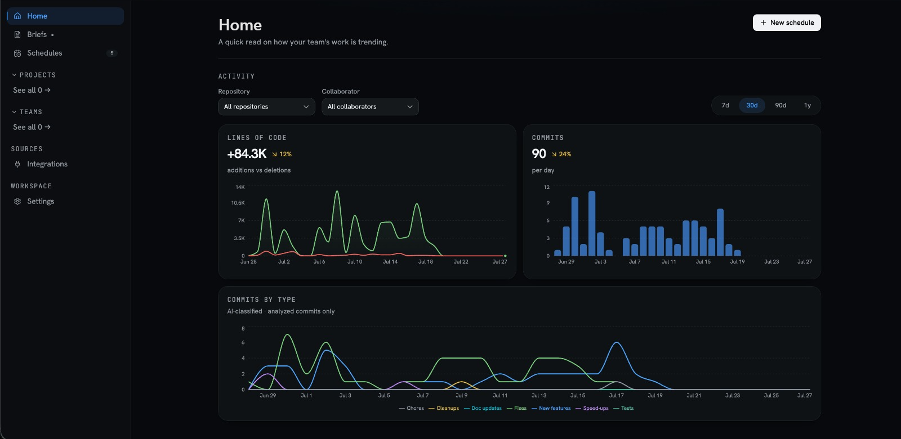

A week of developer activity, turned into a brief a non-technical leader can read and check.
At my friend's company, the CEO and a stakeholder would open the GitHub activity and come out with nothing. Commits, branches, pull requests — technically all the information was right there. Practically, none of it was. So they did what non-technical people always do: they called a meeting. Who did what? How much is done? How long, every week, just to translate a tool into a status update?
The progress existed. The understanding didn't.
Nobody hid anything. Engineers were writing exactly the way they should — for the people who'll read it next, other engineers. The problem is that nobody writes the same update again, in a different language, for the one person who most needs to rely on it.
Checkout now takes split payments, and the login bug that logged people out is fixed. One branch is moving but not yet attached to anything reviewable.
A founder or operations lead at a company of five to fifty people, with no engineering background, who is accountable for a product they cannot read the changelog of.
Their real question is never "what happened in the repo?" It's three questions, every week:
The design target was simple to say and hard to do: answer those three without making anyone learn GitHub.
These came from watching one company and from my own reasoning, not from interviews. Section 09 is where five rounds of structured review put them under pressure; real readers come next.
I looked at five kinds of tools already solving pieces of this. Gitmore, Git Digest and the standup bots are cheap and switch on in minutes, but they write the same generic summary for everyone and give you no way to check it. Jellyfish, LinearB and Swarmia are the opposite: leadership does trust them, but they are expensive, slow to set up, and need someone whose job is partly to run them.
Placement is a judgement from reviewing each tool, not measured data.

Also: written in the reader's language. "Adnan merged the checkout redesign," not "PR #47 merged to main." Three text roles, three typefaces so you can tell them apart without reading: writing for a person in a serif (Newsreader), controls in a plain sans (Inter Tight), facts pulled from GitHub in monospace (JetBrains Mono) and nothing else. One accent colour, used only for links to proof.
Every AI summary is a guess with good posture. The design question isn't "how do I hide the uncertainty?" It's "how do I show it usefully?"
Here's my rule: "I'm not confident about this" is a shrug. "This branch has commits but no linked pull request, so I've left it out rather than guess" is useful.
The second version names exactly what's unclear and why, so the reader can judge whether that gap matters. That's how GitBrief handles its edges: when the data doesn't clearly map to a human story, the brief says so, specifically.
"One item couldn't be placed with confidence: a branch named fix/webhook-retry has commits but no pull request, so this brief leaves it out rather than guess."
The new checkout flow is live for all customers.
Invoice exports are open for review; no reviewer has been assigned for three days.
Tax handling has had no activity since Sep 8; the team notes it was paused by agreement.
One item couldn't be placed with confidence: a branch named fix/webhook-retry has commits but no pull request, so this brief leaves it out rather than guess.
Before showing this to anyone real, I put it through five rounds of structured review. Each round, four constructed reader profiles went through the product with opposite motives: a founder who had been burned by a status update before, a founder with no patience for tools, a board member reading on a phone, and an engineering lead whose team was being described.
They were not real users. They were a way to find the failures a friendly reviewer never mentions — the ones you only hear about after someone forwards a brief and regrets it. The point was to break the thing on purpose, early, while breaking it was still cheap.
Here is what they found.
By the fifth round most of it was fixed, and a reviewer wrote the sentence that mattered more than all of it:
“You have built an extremely good machine for making a founder's unsupported claims look like they came from a rigorous system.”
Every sentence GitBrief writes is now marked, sourced and hedged. Every sentence the founder adds goes out with a name and nothing else — no marker, no evidence, no label. And the founder's sentences are, structurally, the ones about blame and timing, because those are exactly the claims GitHub cannot support.
So a product built to stop unsupported claims from being repeated had become a very credible frame for them. Four rounds of catching the software being generous, and the fifth one was mine.
The pattern underneath all five is the same, and it is the thing I would take to any product that writes on someone's behalf: when software is uncertain, its instinct is to be reassuring, and reassurance is how interpretation gets past a rule that forbids it. Every one of these failures bent in the flattering direction. None of them looked like lying while I was building it.
Three things are still open, and they are open on purpose. The engineering lead has no account, so he can only correct a claim after his CEO has read it, not before. The client version says “one item is not included” without saying which, and naming it, hiding it, or saying nothing are all defensible — I do not yet know which is right. And several controls in the prototype are still inert. None of these are things another review round would settle. They need a real reader, on a real repo, on a real Friday.
Artaza Sameen and I came up with GitBrief together. Everything in this case study is mine — the research, the positioning, the product decisions, the interface, the copy and the prototype.